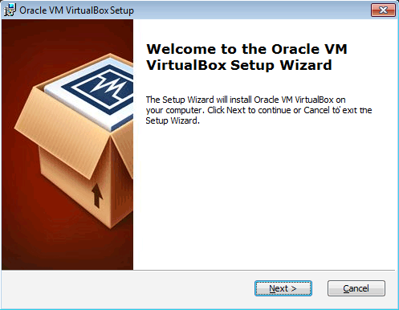
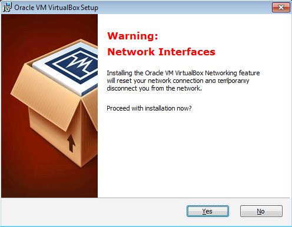
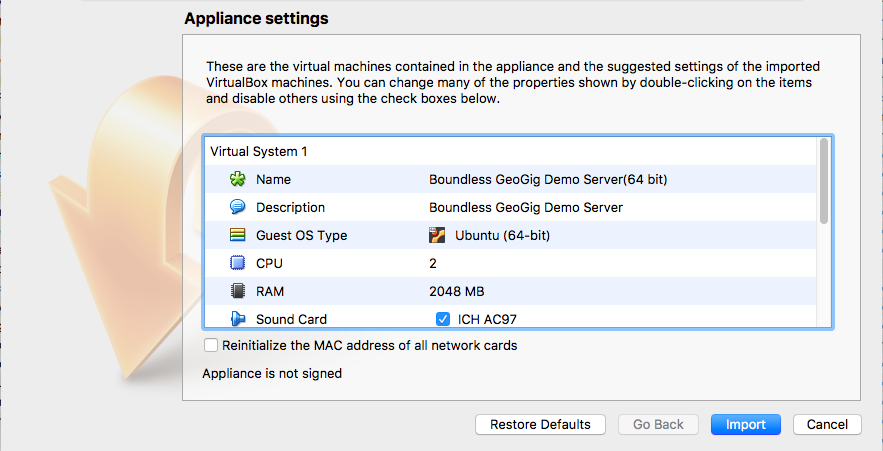
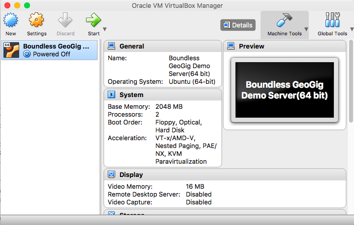
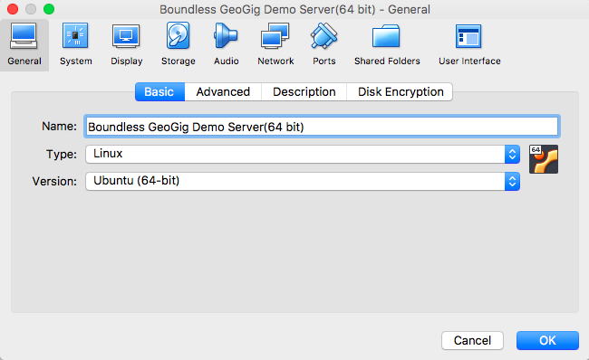
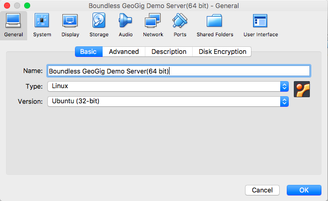
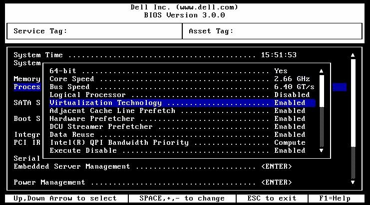
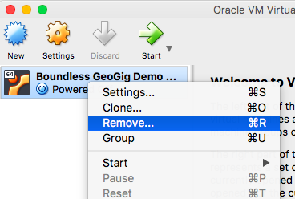
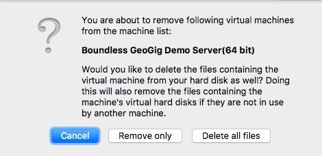

Install the virtual Machine¶
This document contains instrucions for installing the GeoGig virtual machine.
Prerequisites¶
- Please disable any programs on your system that use port 8181. (If this is not possible, please ask for alternative connection options.)
- Make sure you have administrative rights (Windows) or super-user privileges (Linux and OS X) on your system.
Installation¶
Next we will install the GeoGig virtual machine. This virtual machine will run inside VirtualBox in the background of your system.
Exercise
Download the virtual machine from [TODO:Url]
Note
You must be able to run a 64-bit virtual machine. 32-bit machines are not supported.
Download and install the latest VirtualBox. You may keep all defaults during the install.
Installing VirtualBox for Windows
Note
During install on Windows, you may see a warning about your network interfaces. This is expected. Your network connections will be temporarily disconnected, and automatically reset after installation has completed. So be aware that you don’t want to be utilizing your network connection (for example, downloading something) during the installation of VirtualBox.
Network Interfaces warning
Double-click the VM image file that you downloaded above (with the .ova file extension). This will import the virtual machine into VirtualBox.
Virtual machine details
Click Import to accept the defaults.

Importing the virtual machine into VirtualBox
You will now see the Boundless GeoGig Dem Server entry in the list of virtual machines in VirtualBox.
A successful import of the training virtual machine
Determining hardware virtualization compatibility¶
One of the most common problems users have when importing a virtual machine is that if hardware virtualization is not enabled for your system, the virtual machine will silently fail, showing no obvious errors.
So the next step is to check that you have hardware virtualization is enabled for your system, and if not enabled, to show how to turn it on.
Exercise
With the VM successfully imported into VirtualBox, click the General setting link at the top of the VirtualBox Manager window.
In the dialog box that displays, check the value of the Version of the operating system (under the Basic tab). It should say Ubuntu (64-bit).
The version should say “64-bit”
If the field says Ubuntu (64-bit), then everything is set up properly. Click OK to exit out of the Settings dialog, and you may skip the next Explore.
If the field says Ubuntu (32-bit) then most likely hardware virtualization is not enabled for your system. Click OK to exit out of the Settings dialog and continue on to the next Explore.
If you see “32-bit”, then you will need to enable hardware virtualization below
Explore
This exercise is only required if you determined that “hardware virtualization” is not enabled for your system.
Reboot your machine and enter your system BIOS.
Note
Please check with your hardware manufacturer for how to enter your system BIOS.
Search through the settings and look for an option titled one of “Hardware Virtualization”, “Intel Virtualization”, “Virtualization Technology”, “Intel VT-x” or similar setting.
Note
It may be under an “Advanced” section.
Switch the setting to Enabled.
Sample BIOS image. Your BIOS will likely look different.
Save changes to the BIOS and reboot your computer.
Back in your system, remove the VM from your listing by right-clicking the VM and selecting Remove.
Removing the VM
When asked what to do with existing files, select Delete all files.
Deleting VM files
Double-click the original VM file downloaded to reimport it into Virtualbox.
When finished, click the General setting link at the top of the VirtualBox Manager window.
In the dialog box that displays, check the value of the Version of the operating system (under the Basic tab). It should say Ubuntu (64-bit).
The version should say “64-bit”
Note
If it still does not display “64-bit”, then either hardware virtualization was not successfully installed, or there is another issue. Please contact us at training-support@boundlessgeo.com for assistance.
Table Of Contents
Continue Reading
Previous: Plugin settings
This Page
About Boundless
Boundless provides commercial open source software for internet mapping and geospatial application development. We are dedicated to the growth and support of open source software.
License
This work is licensed under a Creative Commons Attribution-Share Alike 3.0 United States License. Feel free to use this material, but we ask that you please retain the Boundless branding, logos and style.